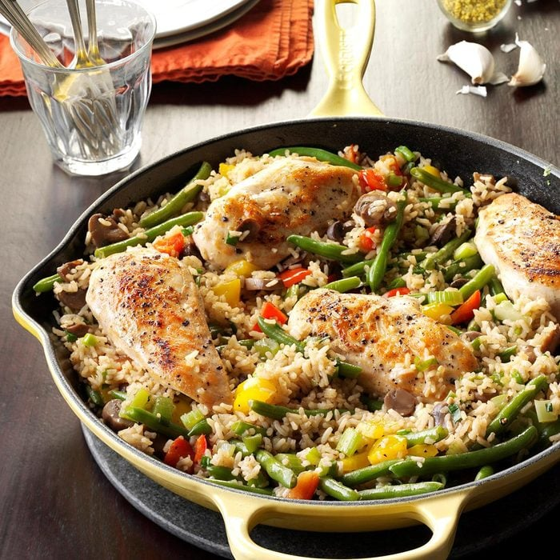

Chicken Rice Skillet Recipe

Description:
Pleasant seasonings and plenty of vegetables highlight this traditional chicken and rice pairing. Leftovers are great reheated in the microwave. —Jan Balata, Kilkenny, Minnesota
Total time:
Prep/ Total Time: 30 mins
Makes: 4 servings
Ingredients:
- 4 boneless skinless chicken breat halves (4 ounces each)
- 2 tablespoons canola oil
- 2 celery ribs, chopped
- 4 green onions, thinly sliced
- 1/2 cup chopped sweet red pepper
- 1/2 cup chopped sweet yellow pepper
- 2 cups frozen green beans, thawed
- 1 jar (4-1/2 ounces) sliced mushrooms, drained
- 1 can (14-1/2 ounces) chicken broth
- 1/4 cup water
- 3 garlic cloves, minced
- 1/2 teaspoon salt
- 1/4 teaspoon lemon-pepper seasoning
- 1/8 teaspoon garlic powder
- 1/8 teaspoon pepper
- 2 cups uncooked instant rice
Directions:
- In a large skillet, cook chicken over medium heat in oil for 3-4 minutes on each side or until a thermometer reads 165°. Remove from pan; keep warm. Add the celery, onions and peppers; cook until vegetables are crisp-tender. Stir in beans and mushrooms until heated through.
- Stir in the broth, water, garlic and seasonings. Bring to a boil. Stir in rice; cover and remove from the heat. Let stand for 5 minutes or until rice is tender; fluff with a fork. To serve, top rice mixture with chicken breasts.
Nutritional Facts:
1 each: 326 calories, 8g fat (1g saturated fat), 16mg cholesterol, 990mg sodium, 51g carbohydrate (4g sugars, 4g fiber), 13g protein.
Back to home page
See Recipe